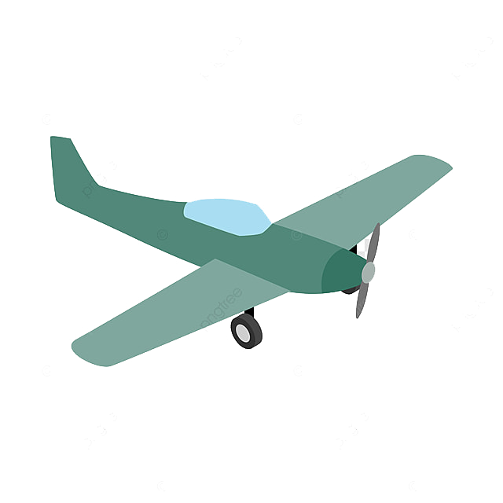
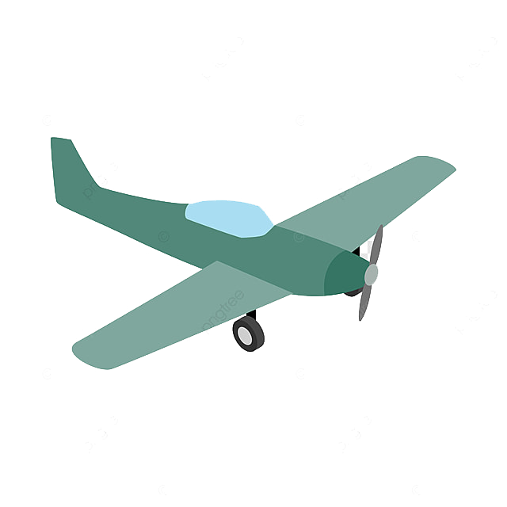
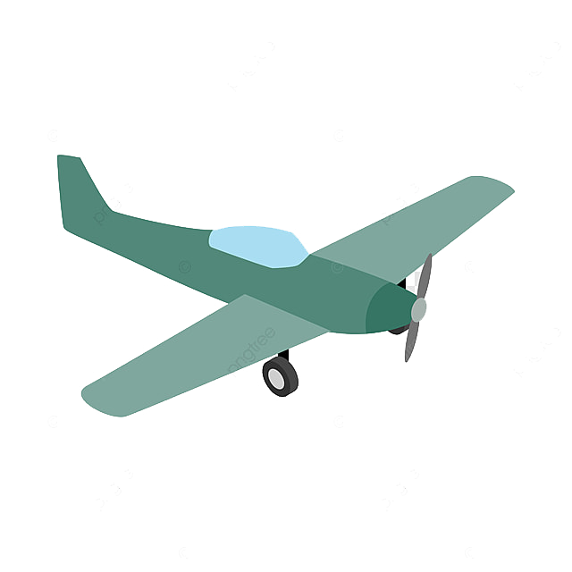
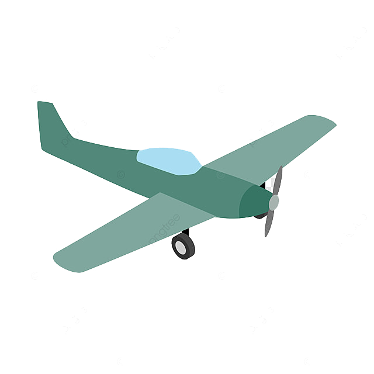

I'm Dagmar.
a programmer and web designer
 

In fact I am a retired children and adolescent psychiatrist (that's a shrink for people younger than 21) and neither programmer nor web designer. But I'd always longed to be one!
Ever since I owned a Commodore 128 and later several Amigas I kept myself busy learning Programmer's languages, such as Basic, Amiga Basic, Pascal, Delphi, Visual Basic, you name it.
But as I had a different (and sometimes difficult) full time job, I never came as far as I'd wished to. Managed to wrtite some smaller programs for praxis routines but that was all of it.
Now after I first started to work less and recently retired fully, I came back to that old passion. I did a course at community college, read some books and visited online workshops on Java and JavaFX, which was fun. Then I started to
deal with XCode and Swift, but lost interest (or was frustated, as I had some problems with XCode/Swift)
After a short dance with Flutter and Dart I am now navigating through HTML, CSS and Javascript. So let's wait and see what derives from all of this.
It is fun anyway to learn and give it a try.
I'm an amateur, a dilettante in different ways on my approach to music and musical instruments.
Historically, the amateur was considered to be the ideal balance between pure intent, open mind, and the interest or passion for a subject (this is quoted from Wikipedia).
That is a good description on how I make music. To me playing music is one of the most relaxing, touching, inspiring activities. To jam with others or to just improvise in your living room is pure joy. It is not for nothing that dilettante derives from Italian dilettante(“to delight”) or from Latin dēlectāre (“to delight”).
But on the other hand I am also dilettantish, as I don't practise on a regular basis, don't do etudes, can't decide, which instrument I want to master but play various instruments like piano and keyboard, drum set and other percussion
instruments, bass gitar and electronic musik with Ableton and Push on a basic to average level.
My first language is German.
I learned English, Latin and very sparce French in school. English I trained with watching movies and series coming from English (or American or Australian or Canadian or whatsoever Englishish language) speaking countries or reading
books etc., French and Latin are almost forgotten
.
I speak and foremost understand Dutch nearly fluently as my wife is Dutch.
I learned Norwegian which is far more difficult than I expected. They have a million different ways to pronounce and use words. It is quite easy to read a newspaper but to understand somebody talking about the weather is still quite
impossible for me.
I like to work in our shop and do woodworking, building furniture or little bowls and boxes.
I am a quite skilled illustrator, both digital and analog. I like painting and printing. I like to experiment with different materials such as encaustic waxes, collages or mixed media.

I hope I stay healthy, curious, nimble and flexible for a long time, just like this old lady, I found at giphy.com
And I hope you all do so as well!
You can reach out for me via email or LinkedIn
© 2020 Dagmar Feldt.